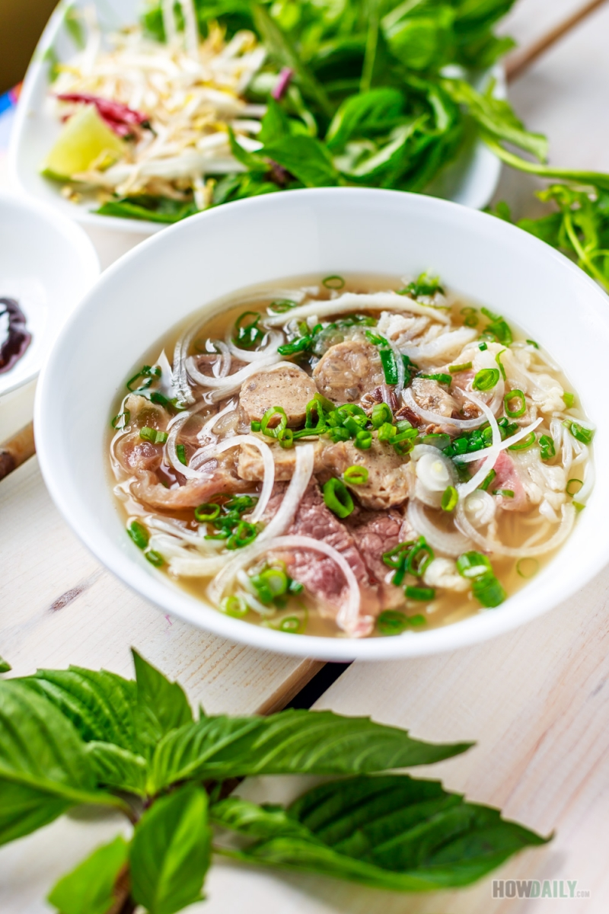
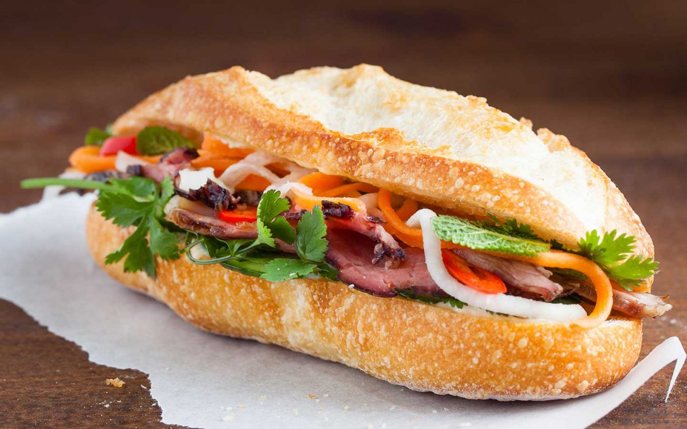
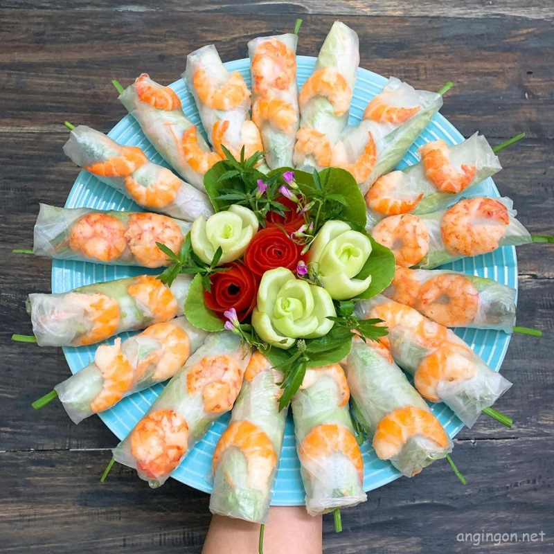

Phở
Phở là món ăn quốc hồn quốc túy của người Việt, nổi tiếng với nước dùng đậm đà và sợi phở mềm mại.
Bánh Mì
Bánh mì Việt Nam là sự hòa quyện giữa văn hóa ẩm thực phương Đông và phương Tây, với lớp vỏ giòn tan và nhân phong phú.
Gỏi cuốn
Gỏi cuốn là món ăn nhẹ mát lạnh, thường được ăn kèm với nước chấm tương đậm đà.
Những món ăn Việt Nam khác đáng thử:
- Bún chả
- Bún bò Huế
- Cơm tấm
- Bánh xèo
Đọc thêm tại Wikipedia về Ẩm thực Việt Nam.